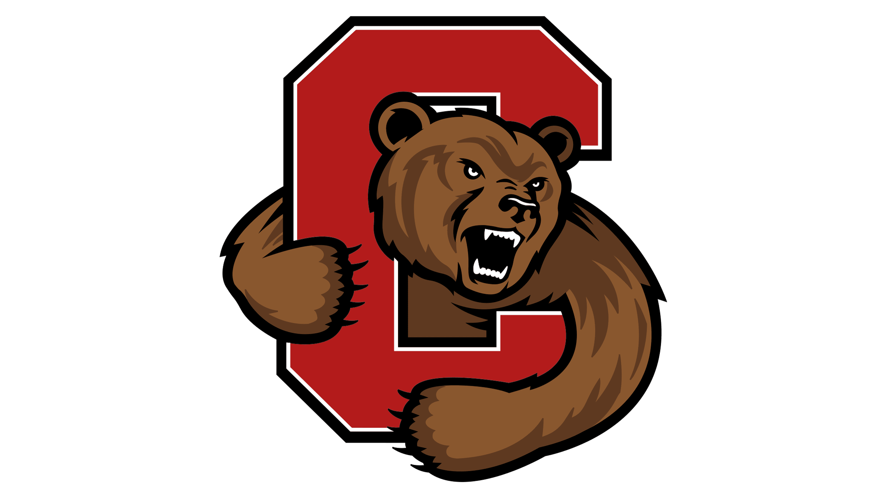

Builder. Leader.
Always curious.
I grew up in Penfield, NY in a family that treats engineering like a native language. My mom is an engineer. My dad is an engineer. My grandfather was an engineer. Dinner table conversations were about systems, efficiency, and why things break the way they do. It was never pressure — just the water I swam in. By the time I hit high school I'd already developed a stubborn habit of not being able to leave a problem unsolved.
Cornell ORIE fits the way my brain works — it lives at the intersection of math, decision-making, and computation. Adding CS as a double major wasn't a career calculation; it was the obvious next step. Software is how I actually build the things I'm thinking about. Together, the two programs let me go from an abstract problem all the way to a working solution. I do research at Cornell's BeyngLab — building AI-assisted search and retrieval for a 40,000+ page digital archive — which is about as close to that ideal as I've gotten so far.
High school was a lot, all at once. I joined speech and debate as a freshman and qualified for nationals three years running, placing 6th in New York State in Original Oratory my senior year. I made Eagle Scout and led a 50-person contingent at the 2023 National Jamboree. I founded a service organization from nothing — conceived the idea, built the structure, partnered with Habitat for Humanity, managed event budgets, and ran it for four years. I served as Band Council president and lead guitarist in jazz ensemble, composed an original piece that premiered at our senior concert, and worked at Wegmans throughout all of it. I've built two production apps from scratch — an AI nutrition platform and an AWS-powered video streaming service. I tend to take on a lot. I don't regret any of it.
Outside of academics I'm usually on a mountain bike, out on the water, or playing guitar. I watch a lot of films and have made a few short ones. I compose music, edit video, and try to bring the same standard to software that I'd bring to a jazz arrangement — which is to say, I care about the craft even when no one is grading it.
I show up prepared, communicate directly, and don't need much hand-holding. My best work happens in environments where people genuinely care about what they're building — and hold each other to a high standard because of it.
Academic background
Cornell University
B.S. in Operations Research & Information Engineering
Double Major in Computer Science · College of Engineering
Graduation: May 2028 · Ithaca, NY
Relevant Courses
- Data Structures and Algorithms
- Object-Oriented Programming
- Probability & Statistics
- Multivariable Calculus
- Linear Algebra
- Calculus II
Organization Involvement
- Kappa Theta Pi — President of Beta New Member Class
- Sigma Nu Fraternity — Treasurer, Gamma Theta Chapter

Webster Schroeder High School
High School Diploma
Graduation: June 2025 · Webster, NY · 98.0 GPA
AP Coursework — 10 courses total, selected below
- AP Computer Science A
- AP Calculus BC
- AP Physics C: Mechanics
- AP Chemistry
Organization Involvement
- Speech & Debate — Captain, Student Coach, Judge, Treasurer
- Webster Service Scholars — Founder & Treasurer
- Jazz & Wind Ensemble — Lead Guitarist, Band Council President
- Scouts BSA — Eagle Scout, Senior Patrol Leader